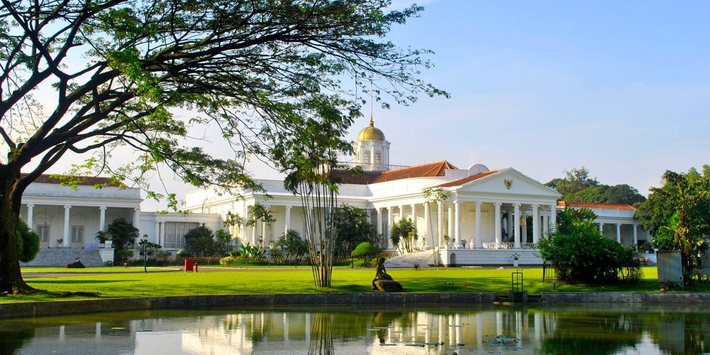
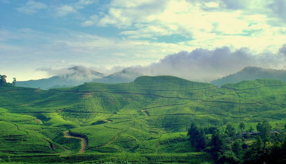
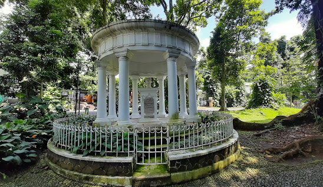
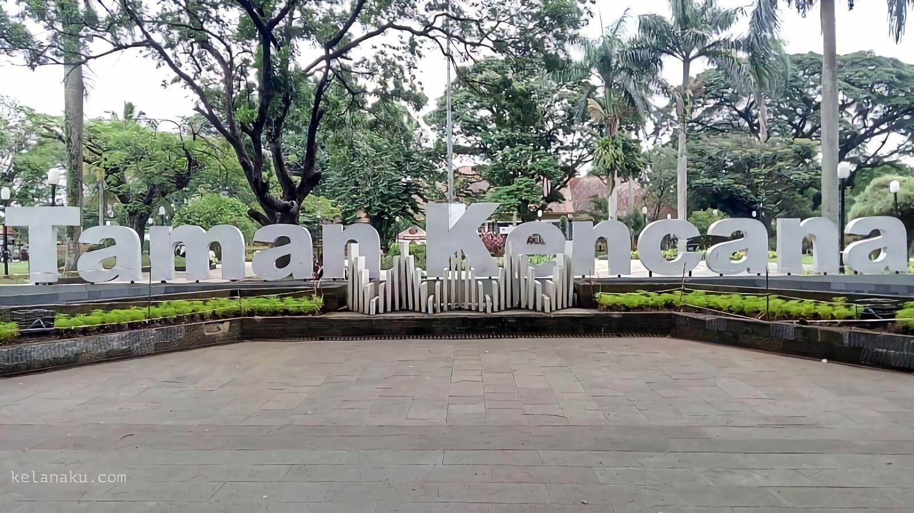
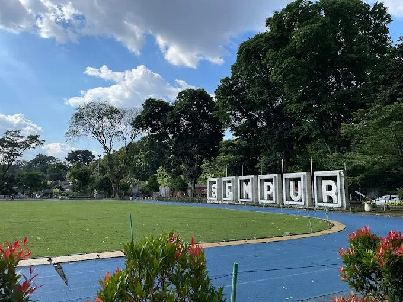

Sejarah

Hampir secara umum penduduk Bogor mempunyai keyakinan bahwa Kota Bogor
mempunyai hubungan lokatif dengan Kota Pakuan, ibukota Pajajaran. Asal-usul dan arti Pakuan
terdapat dalam berbagai sumber. Di bawah ini adalah hasil penelusuran dari sumber-sumber tersebut berdasarkan urutan waktu:
Naskah Carita Waruga Guru (1750-an). Dalam naskah berbahasa Sunda Kuna ini diterangkan bahwa nama Pakuan Pajajaran
didasarkan bahwa di lokasi tersebut banyak terdapat pohon Pakujajar.
Filosofi Hujan di Kota Hujan
Lima tahun, berada dalam nafas kota ini, saya telah menghirup segala bau nafasnya yang menggenang.
Kota ini telah menyemaikan kepingan-kepingan kenangan bagiku.
Setiap jejak pada tubuh kota ini adalah hujan kenangan yang selalu membawaku pada sebuah dingin yang merindu.
Bogor. Sebuah kota di negeri ini. Dengan kultur budaya Sunda,
menyulam gelagat alam dsn tentang orang-orang di kota ini adalah hal yang istimewa bagi saya.
Geografis

Kota Bogor (Sunda: ᮊᮧᮒ ᮘᮧᮌᮧᮁ) adalah sebuah kota di Provinsi Jawa Barat, Indonesia.
Kota ini terletak 59 km sebelah selatan Jakarta, dan wilayahnya berada di tengah-tengah wilayah Kabupaten Bogor.
Dahulu luasnya 21,56 km², namun kini telah berkembang menjadi 118,50 km² dan jumlah penduduknya 1.030.720 jiwa (2014).
Bogor dikenal dengan julukan kota hujan, karena memiliki curah hujan yang sangat tinggi. Kota Bogor terdiri atas 6 Kecamatan
yang dibagi lagi atas sejumlah 68 Kelurahan. Pada masa Kolonial Belanda,
Bogor dikenal dengan nama Buitenzorg (pengucapan: boit'n-zôrkh”, bœit'n) yang berarti “tanpa kecemasan” atau “aman tenteram”.
Bogor ditilik dari sejarahnya adalah tempat berdirinya Kerajaan Hindu Tarumanagara di abad ke lima.
Beberapa kerajaan lainnya lalu memilih untuk bermukim di tempat yang sama dikarenakan daerah pegunungannya yang secara alamiah membuat lokasi ini mudah untuk bertahan terhadap ancaman serangan,
dan di saat yang sama adalah daerah yang subur serta memiliki akses yang mudah pada sentra-sentra perdagangan saat itu. Namun hingga kini, berdasarkan penelitian yang dilakukan oleh beberapa arkeolog ternama seperti
Prof. Uka Tjandrasasmita, keberadaan tempat dan situs penting yang menyatakan eksistensi kerajaan tersebut, hingga kini masih belum ditemukan bukti autentiknya.
Wisata
Kota Bogor adalah tempat mengukur segala ruang pemikiran. Kota adalah tempat menenun tapak-tapak langkah menuju realitas yang sebenarnya,
kota Bogor adalah akar membangun kepribadian, membelah setiap pertanyaan-pertanyaan yang membatu pada jalan manusia.
Dan tentunya kota adalah tempat bagaimana manusia menempatkan kemanusiaan pada setiap laju perilaku.
Kebun Raya Bogor

Kebun Raya Bogor atau Kebun Botani Bogor adalah sebuah kebun botani besar yang terletak di Kota Bogor, Indonesia.
Luasnya mencapai 87 hektaree dan memiliki 15.000 jenis koleksi pohon dan tumbuhan. Saat ini Kebun Raya Bogor ramai dikunjungi sebagai tempat wisata,
terutama hari Sabtu dan Minggu. Di sekitar Kebun Raya Bogor tersebar pusat-pusat keilmuan yaitu Herbarium Bogoriense, Museum Zoologi Bogor, dan PUSTAKA.
Taman Kencana

Taman ini merupakan salah satu peninggalan zaman Belanda. Didukung dengan suasana di sekitarnya yang masih rindang dengan pepohonan,
taman ini sekaligus menjadi tempat rekreasi dan semacam titik pertemuan bagi sebagian masyarakat Kota Bogor, apalagi dengan kemunculan penjual-penjual makanan pinggiran jalan maupun outlet-outlet makanan di rumah-rumah di sekitarnya.
Taman Kencana akan menjadi sangat ramai pada hari Minggu,tempat ini menjadi salah satu tujuan akhir para pelari pagi warga Bogor setelah lelah berolahraga mengelilingi Kebun Raya Bogor ataupun Lapangan Sempur.
Taman Sempur

Taman Sempur Bogor ini akan terlibat cantik dan indah jika dilihat pada malam hari karena di setiap sudutnya dihiasi lampu-lampu.
Tak hanya itu, Sempur juga difasilitasi Taman Kaulinan bagi anak-anak, lapangan basket, dan Skate Park.
Wali Kota Bogor, Bima Arya Sugiarto mengatakan, Taman Sempur merupakan bagian dari kawasan utama pusat kota sehingga harus ditata dan dibenahi.
Sebab, sejak dulu kawasan itu menjadi salah satu tempat olahraga juga tempat bermain warga Kota Bogor.
Info lengkap Bogor